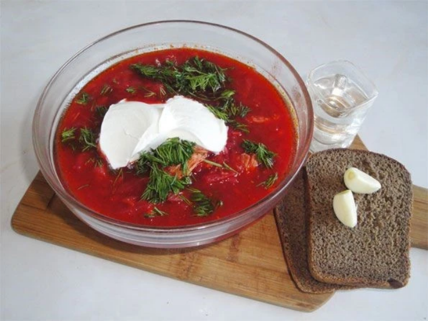

Borsh

Description
Borsh is a traditional Russian soup prepared from beets and cabbage. It is usually served with a spoon of sour
cream. There are over 40 varieties of hot and cold borsh that use different combinations of vegetables and
meats.
Ingredients
- 4 cups cabbage
- 3 cups water
- 3 cups chicken broth
- 3-4 medium potatoes
- 3 chicken bouillon cubes
- 1-2 big carrot
- 1/2 medium onion (yellow)
- 2 large fresh beets
- 1 (16 ounce) can Italian-style diced tomatoes, drained
- 2 garlic cloves
- fresh dill (optional)
- sour cream (optional)
Steps
- Shed cabbage, dice potato, dice the onion, cut carrots into rounds, and shred the beats*.
- Put cabbage and potato in a pot, add water, chicken broth, and bouillon cubes.
- Heat on high until boiling.
- Meanwhile saute onion, beets, and carrot together for about 5-7 minutes.
- Add diced tomatoes and salt to taste, and cook another 5 minute.
- Then add pan mixture into pot, boil for 15 minutes.
- Turn off heat add minced garlic. Serve with sour cream and fresh dill.
- * Special Note on Beets: Although beets are the most beautiful rich fuchsia on the inside, their juices will
stain everything hot pink, including your hands and cutting board. The best way to prep fresh beets for this
recipe is to first peel them with a peeler, cut into thin slices, and finally, layer and cut into matchlike
sticks.
- * For Vegetarians: simply substitute 3 cups of chicken broth with water, and omit chicken bouillon for a
great vegetarian variation.